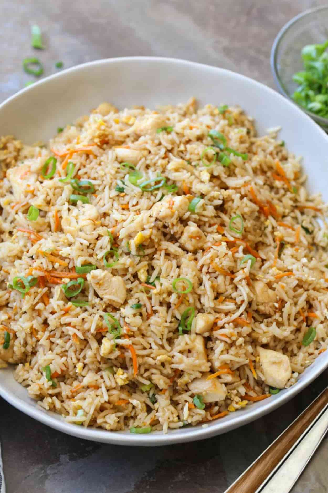

Fried Rice Recipe

Description
Fried rice is a classic asian dish popular all around the world. The ingredients are high customizable which appeals to people of all diets.
This simple and easy recipe will get you started on making the best fried rice.
Ingredients
Ingredients for 2 servings include:
- 2 teaspoons canola oil, or more as needed
- 2 eggs
- ½ teaspoon water
- 2 teaspoons sesame oil, divided
- ½ onion, diced
- 1 clove garlic, minced
- ¼ cup frozen peas and carrots, thawed and patted dry with paper towel
- 2 cups cold cooked jasmine rice
- 2 teaspoons light soy sauce
- 1 teaspoon fish sauce
- 1 tablespoon sriracha sauce, or to taste (Optional)
- ½ teaspoon white sugar
- ½ teaspoon salt, or to taste
- ½ teaspoon ground white pepper, or to taste
- ½ teaspoon monosodium glutamate (MSG) (Optional)
- ¼ cup chopped green onion, or to taste, divided
- ¼ cup chopped fresh cilantro, or to taste (Optional)
- 1 cucumber (Optional)
Directions
- Heat 2 teaspoons canola oil in a large wok or skillet over high heat until smoking.
- Beat eggs and water together in a bowl until smooth. Pour beaten egg mixture into the skillet, let it cook in the oil briefly to begin to firm, and then scramble lightly with a wooden spoon until the eggs are cooked and shiny, 2 to 3 minutes. Remove cooked eggs to a plate.
- Pour 1 teaspoon sesame oil into the hot pan. Add enough canola oil to cover the cooking surface of the pan and heat to smoking. Saute onion and garlic in oil until fragrant, 1 to 2 minutes; add peas and carrots and cook until hot, 1 to 2 minutes more. Return cooked eggs to the pan.
- Gradually add rice to the skillet, breaking and tossing chunks to break into individual grains and mixing with vegetables; cook and stir until the rice starts to turn a slight brown color and is completely hot, 2 to 3 minutes.
- Stir soy sauce, fish sauce, sriracha sauce, sugar, salt, 1/2 teaspoon white pepper, and monosodium glutamate into the rice mixture; continue to cook and stir until the grains of rice are no longer sticking together, 2 to 3 minutes more. Remove pan from heat and sprinkle green onion and cilantro over the fried rice; toss to mix.
- Peel outside skin of cucumber with vegetable shredder to create a ragged design on the outside. Slice cucumber diagonally and arrange in a circle around the serving platter. Serve rice in middle of platter, topping with additional green onion and a dash of white pepper.